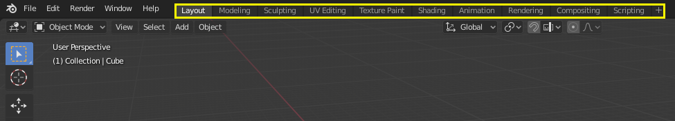

工作空间¶

工作空间位于顶栏¶
工作空间 本质上是预设的窗口布局。Blender 区域 的弹性让用户得以为不同点任务，如建模，动画和脚本编写自定义不同点工作空间。常用于在同一文件中快速切换不同的工作空间。
控件¶
- 选项卡
单击选项卡切换工作空间。使用 Ctrl-PageUp 和 Ctrl-PageDown 循环切换工作空间。
- 添加
+ 单击 添加 按钮添加一个新的工作空间。
- 上下文菜单 RMB
上下文菜单包含复制，删除和重新排序工作空间。
默认工作空间¶
- 布局
用于预览场景以及物体的常规工作空间。
- 建模
使用建模工具修改几何体。
- 雕刻
使用雕刻工具修改网格。
- UV编辑
将图像纹理坐标映射至三维表面。
- 纹理绘制
在3D视图中绘制图像纹理。
- 着色
为渲染指定材质属性。
- 动画
使物体属性随时间发生变化。
- 渲染
用于查看以及分析渲染结果。
- 合成
图像以及渲染信息合并以及后处理。
- 脚本
用于编写脚本的编程工作空间。